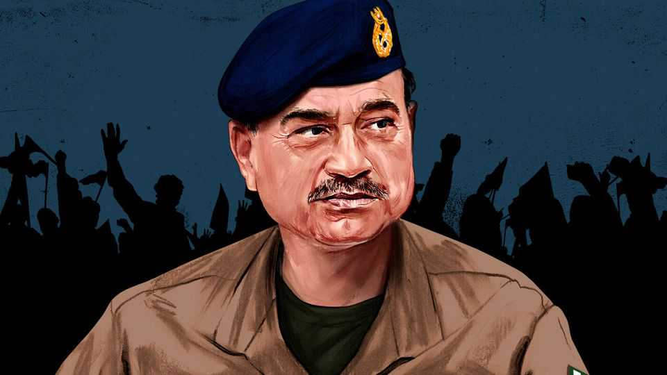
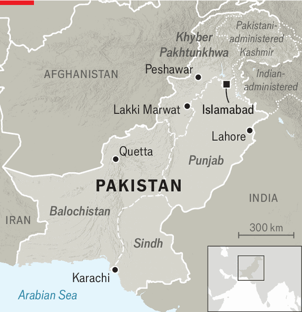

A controversial new power grab in Pakistan
The country’s army chief and de facto ruler wants to redraw the political map

Oct 8th 2026
FOR WEEKS the news in Pakistan has been dominated by a to-and-fro over whether Imran Khan’s Pakistan Tehreek-e-Insaf (PTI) party would be allowed to stage a protest for its jailed hero. Supporters of the cricketer turned prime minister have issued rallying cries to show their undying loyalty. Ministers have responded with menace. In Islamabad, the capital, authorities have blocked the roads with more than 2,000 shipping containers—some studded with nails. At entry points to the city, bus-loads of truncheon-wielding policemen grin at frustrated motorists.
After talks between the PTI and the government ended in stalemate, the march eventually got going on October 4th. Around 5,000 of Mr Khan’s supporters set off from Lakki Marwat, 275km west of Islamabad in the PTI-run province of Khyber Pakhtunkhwa. They hoped to pick up more supporters along the way, but have not yet decided whether to march on the capital. The whole circus will go on.
Look deeper, and another struggle for power is under way. While Mr Khan commands attention, the man who put him behind bars is plotting his next move. Field Marshal Asim Munir, Pakistan’s de facto ruler, plans to redraw the country’s political map by creating new provinces. What sounds like a dry administrative change is anything but. It would break up the fiefs in which Pakistan’s dynastic political parties have built their power. Whether the field marshal gets his way on this will be a test of his dominance.
He has form. Pakistan’s constitution has been amended twice in the past two years. A new Federal Constitutional Court (FCC), stacked with regime loyalists, takes precedence over the (now misnamed) Supreme Court. In September it in effect blocked a ruling that Mr Khan should be moved to a private hospital for medical treatment. The field marshal has tightened his grip over the air force and navy, and increased his control over hiring and firing across the armed forces.
His control of other appointments—still technically civilian decisions—is openly acknowledged. Shehbaz Sharif, the prime minister, is widely seen as a puppet. Mohsin Naqvi, the interior minister, is considered more powerful, because he is known to be the field marshal’s man.
Despite amassing such power, the field marshal is frustrated, according to those who know him. The economy remains in a rut. In September inflation was 10.3%, year on year. After servicing debt and keeping his men in new uniforms, the federal government has little left over. In July it put up taxes on petrol; in September a big protest over the new levies was postponed.
The field marshal believes that his successes on the world stage, where he has emerged as a key interlocutor between America and Iran, have not been matched by his civilian colleagues at home, explains Faisal Vawda, a senator and former confidant of Mr Khan who is now close to the army. Outriders like Mr Vawda now openly castigate the current political class. “They have raped the country,” he says.
All this helps explain the mood of the debate over the latest plan. The starting gun was fired by Mr Naqvi. In a speech in July, he argued that Pakistan’s governance system had “collapsed”. The country was flailing owing to population growth, import dependence and bulging debts—its “current democratic system” could not cope. Frustrated youth (“these cockroaches”) could “turn everything upside down”, he warned. The only solution, he opined, was to break Pakistan’s four provinces into smaller units.
Cue outrage. To see why the plan is so controversial, consider Pakistan’s two most important provinces. Punjab is the richest and most populous, home to the old business hub of Lahore, and fertile plains around it (its name means “five rivers”). It has been dominated by the Sharif family and its Pakistan Muslim League-Nawaz (PML-N) party for most of the past four decades; first by Nawaz Sharif, who went on to become prime minister, then by Shehbaz, Nawaz’s brother, the current prime minister; and now by Maryam, Nawaz’s daughter, who is the province’s chief minister but eyes her uncle’s job.
Sindh—a poor southern province that encompasses Pakistan’s port-metropolis, Karachi—is the fief of the Bhutto dynasty. Zulfikar Ali Bhutto built a political base there in the 1960s with his Pakistan Peoples Party (PPP), before going on to rule Pakistan. It was later controlled by his daughter, Benazir, who was assassinated in 2007. Now it is in the grip of her widower, Asif Ali Zardari, who is Pakistan’s president (these days a purely ceremonial head of state), supports the governing coalition and is close to the army regime, while Bilawal Bhutto Zardari, the heir to the dynasty, is groomed for high office.

The stated logic for radical reform is that the current provinces are too big and corrupt, and local governance is thus dire. This has some merit. Punjab has 128m people; rural citizens travel hours to settle a land dispute. Pakistanis invoke “Nawaz’s palace” and “Maryam’s plane” as symbols of a fantastically entitled ruling elite. In Sindh the PPP has turned corruption into an art form, says Muhammad Zubair, a former governor of the province (the party denies this). Mr Zardari is thought to be one of Pakistan’s richest men.
Yet many observers suspect that the field marshal’s plan is more about cutting political parties down to size. The army rules at the federal level and has long sought to centralise power and resources. In June Field Marshal Munir forced the provinces to forgo grants from the centre worth around 3% of total public spending. Critics of the current plan argue it will simply further weaken the civilian government. In time, some fear, more provinces will just create more sinecures.
Under Pakistan’s constitution, dividing a province requires a two-thirds majority in its own assembly. The field marshal would thus need turkeys to vote for Christmas. The PML-N seems ready to do so. It is unpopular and has hitched itself to the regime; though the Sharifs would hate to see Punjab split up, they would survive. For the PPP, however, it is existential. Karachi is the foundation of the party’s patronage system. While it controls (and extracts rents from) the city thanks to ruling Sindh, it has little support there. In September the Sindh assembly passed a resolution rejecting the plan.
In private, Field Marshal Munir is said to be resolute. Mr Vawda predicts that there will be a national referendum on the proposal in the coming months, bypassing the need for provincial approval. Some see such a vote as a stepping stone to the field marshal establishing himself as a powerful executive president, as General Pervez Musharraf did in the 2000s, after seizing power from a civilian government blighted by corruption and mismanagement.
Yet it is not clear that the field marshal will have his way. He does not have much popular support, and he may not want to alienate all of his political partners—especially while Mr Khan, who enjoys public adoration, sits in jail. Some people within Mr Khan’s party even see an opportunity in the cracks emerging between the army and the government. “We have been waiting for a black-swan event,” says one former PTI minister. ■
For exclusive coverage of Asian politics, economics and security, sign up to Asia Bulletin, our weekly subscriber-only newsletter.